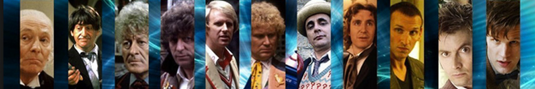

| HOME | The Doctors | The Companions | The Villians |
|  | |||
The Doctors
|
The Eighth DoctorPaul McGann played the eighth incarnation of the Doctor in the Doctor Who 1996 television film. The television film also starred Eric Roberts, Daphne Ashbrook and featured the outgoing Seventh Doctor, Sylvester McCoy. McGann's brother, Mark McGann, also auditioned for the title role. The Doctor Who television film was a joint venture between the BBC, Universal Studios and the Fox Broadcasting Network. McGann had signed a contract to appear as the Eighth Doctor in a new Doctor Who series, if Fox or Universal exercised their option. Thus, the television film was supposed to be a "back door pilot" in that, if it obtained respectable ratings, the new series would continue to be produced. The film was shown on 14 May 1996 in the US and on 27 May 1996 in the UK. Although it earned 9.08 million viewers and was very successful in the UK, ratings were very low in the United States. As a consequence, Fox did not exercise its option to pick up the series and Universal could not find another network interested in airing a new Doctor Who series. Thus no new series was produced until 2005, after all the contractual rights had returned to the BBC. McGann gave permission for his likeness to be used on the covers of the BBC's Eighth Doctor novels and he has reprised the role of the Eighth Doctor in an extensive series of audio plays by Big Finish Productions. A number of these plays have also been broadcast on BBC Radio 7 (later BBC Radio 4 Extra). Rumours abounded that Paul McGann would reprise the role of the Eighth Doctor in a new series of television films, alongside the current television series.[5] McGann has denied these rumours on the grounds of not having been asked back to play the part but if he were to be asked would be interested as long as he "didn't have to wear a wig".[6] After months of speculation, on 14 November 2013 (coincidentally McGann's birthday), as part of the show's 50th Anniversary celebrations, Paul McGann finally reprised his role as the Eighth Doctor, in the mini-episode The Night of the Doctor. In this appearance his incarnation of the Doctor finally regenerates, 17 years after his first television appearance, into a previously unknown Doctor played by John Hurt. In November 2013 McGann briefly appeared in the 50th anniversary comedy homage The Five(ish) Doctors Reboot |